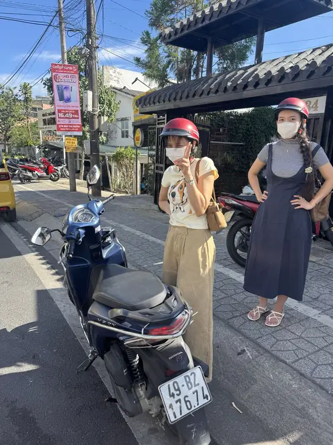
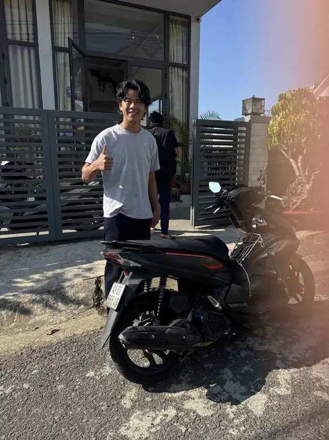

Come funziona questo programma di 2 giorni
Questo itinerario per visitare Da Lat in 2 giorni in scooter tiene il primo giorno vicino alla città e lascia la sveglia presto per il secondo, quando la luce del mattino è la più bella. Quasi tutte le tappe del primo giorno sono a circa 5–7 km dal lago Xuan Huong, quindi anche chi guida da poco se la cava tranquillamente. Il secondo giorno si va un po' più lontano, circa 20–25 km a tratta fino alle colline del tè. Se hai un solo giorno, segui il primo e aggiungi il mercato notturno.
Giorno 1, mattina: il lago e la città vecchia
- Lago Xuan Huong: comincia con un giro lento intorno al lago (circa 5 km) e un caffè in riva all'acqua.
- Stazione ferroviaria di Da Lat: poco a est del lago, con l'edificio d'epoca coloniale francese e le vecchie carrozze per le foto.
- Domaine de Marie e Crazy House: due edifici molto diversi sul lato ovest del centro, vicini tra loro — la chiesa rosa e la bizzarra pensione-galleria a forma di albero.
Lascia lo scooter nei parcheggi custoditi (gửi xe), conserva il biglietto e spostati a piedi tra le tappe vicine.

Giorno 1, pomeriggio: cascata, monastero e lago tra i pini
- Cascata di Datanla: circa 5–7 km a sud del centro. Puoi scendere a piedi o con l'alpine coaster fino alla cascata.
- Monastero di Truc Lam e lago Tuyen Lam: qualche chilometro più in là, tra le colline di pini. Ci arrivi direttamente in scooter, oppure prendi la funivia da Robin Hill e poi torni a recuperare lo scooter.
- Tramonto: fermati in un caffè tra i pini sulla strada del ritorno.
Per altre idee da questa parte della città, leggi la nostra guida alle cascate vicino a Da Lat.
Giorno 1, sera: il mercato notturno
La sera torna in centro, parcheggia vicino al mercato centrale e fai un giro al mercato notturno di Da Lat: carta di riso alla griglia, latte di soia caldo, zuppe dolci e vestiti pesanti se non eri pronto per l'aria fresca. A letto presto — domani si parte prima dell'alba.
Giorno 2, alba: le colline del tè di Cau Dat
Le colline del tè di Cau Dat sono a circa 20–25 km dal centro, più o meno 40–60 minuti in scooter. Parti verso le 4:30–5:00 per vedere l'alba e, nelle mattine fortunate, un mare di nuvole sopra la valle. La nostra guida all'alba a Cau Dat spiega la strada e l'orario migliore. Al ritorno fermati alla pagoda Linh Phuoc a Trai Mat (circa 8 km dal centro), famosa per le sue decorazioni a mosaico, e fai una colazione tardiva in città.

Giorno 2, tarda mattinata: bagagli e partenza
Lascia l'hotel, bevi un ultimo caffè e riconsegna lo scooter prima di andare all'autobus o all'aeroporto. Se ti restano un paio d'ore, aggiungi una fattoria di fiori o un caffè tranquillo in riva al lago — tieni corto l'ultimo giro, così non devi correre.
Quale scooter per 2 giorni
- Honda Air Blade 125cc: la scelta migliore per questo programma, soprattutto per le salite verso Cau Dat e se siete in due.
- Honda Vision 110cc: leggera e facile, va bene per il primo giorno e se guidi da solo.
- Scooter elettrico: perfetto per il primo giorno in città, ma non per il lungo giro in salita fino alle colline del tè.
Buono a sapersi
- In Vietnam si guida a destra; vai piano sulle strade bagnate o con la nebbia e frena dolcemente in discesa.
- Mattine e sere sono fredde — porta una giacca calda e, nella stagione delle piogge, un impermeabile.
- Niente alcol né birra quando guidi, e rispetta rigorosamente il codice della strada vietnamita.
- Se resti di più, guarda il nostro programma di 3 giorni e la pagina degli itinerari.
Noleggia lo scooter per il weekend da Van Phu
Ogni mezzo costa 150.000 VND al giorno, con casco gratuito, porta-telefono e 1 litro di carburante negli scooter a benzina, senza deposito in contanti — lasci solo il passaporto o la carta d'identità. Un giorno di noleggio va dal ritiro fino alle 21:00, e per 2 giorni o più consegniamo gratis negli hotel del centro di Da Lat. Il nostro negozio apre alle 4:30, quindi partire presto non è mai un problema. Guarda tutti i mezzi sulla nostra pagina del noleggio scooter a Da Lat e scrivici su WhatsApp o Zalo.
Domande su Da Lat?
Ti aiutiamo con itinerari, meteo e prenotazione dello scooter — scrivici su WhatsApp.
Scrivici su WhatsAppNoleggio scooter a Da Lat
Honda Vision, Honda Air Blade 125cc e scooter elettrici — 150,000 VND al giorno, nessun deposito in contanti, casco gratuito, consegna in hotel per 2+ giorni.
Noleggio scooter Da Lat · Noleggio scooter elettrico a Da Lat